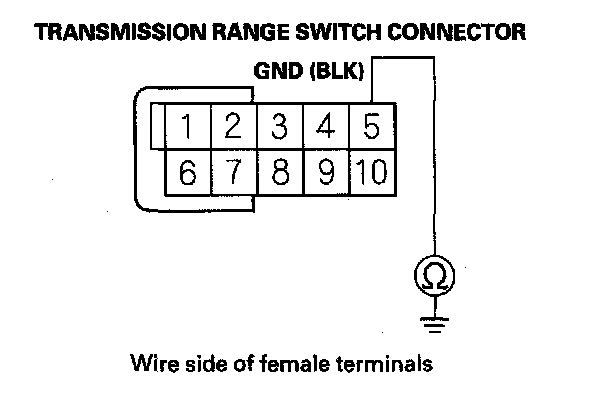
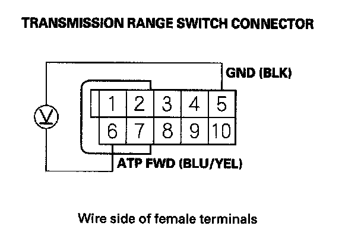
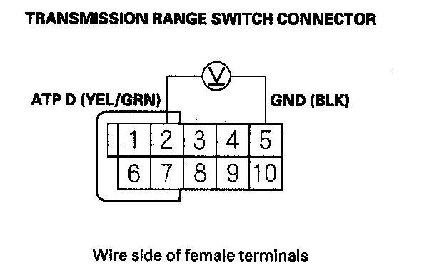
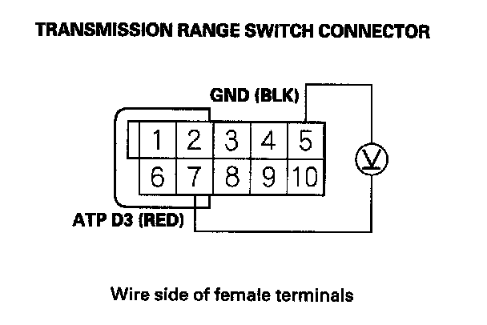

DTC Troubleshooting
DTC P0706: Open in Transmission Range Switch CircuitNOTE: Before you troubleshoot, record all freeze data and any on-board snapshot, and review General Troubleshooting Information. This code is caused by an electrical circuit problem and cannot be caused by a mechanical problem in the transmission.
1. Clear the DTC with the HDS.
2. Raise the vehicle on a lift, make sure it is securely supported, and allow all four wheels to rotate freely.
3. Start the engine, and turn the VSA off (the light on the VSA OFF switch comes on). Run the engine in the D position until the vehicle speed reaches 25 mph (40 km/h), then slow down and stop the wheels.
4. Monitor the OBD STATUS for P0706 in the DTCs/Freeze Data in A/T Mode Menu for a pass/fail.
Does the result indicate FAILED?
YES - Go to step 5.
NO - Intermittent failure, the system is OK at this time. Check for poor connections or loose terminals at the transmission range switch and the PCM. If the HDS indicates NOT COMPLETED, return to step 3 and recheck.
5. Turn the ignition switch OFF.
6. Inspect the transmission range switch.
Is the switch OK?
YES - Go to step 7.
NO - Replace the transmission range switch, then go to step 30.
7. Install the transmission range switch correctly, and adjust the shift cable.
8. Clear the DTC with the HDS.
9. Start the engine, and turn the VSA off (the light on the VSA OFF switch comes on). Run the engine in the D position until the vehicle speed reaches 25 mph (40 km/h), then slow down and stop the wheels.
10. Monitor the OBD STATUS for P0706 in the DTCs/Freeze Data in A/T Mode Menu for a pass/fail.
Does the result indicate FAILED?
YES - Go to step 11.
NO - Intermittent failure, the system is OK at this time. Check for poor connections or loose terminals at the transmission range switch and the PCM. If the HDS indicates NOT COMPLETED, return to step 9 and recheck.
11. Shift to the D position, and verify the ATP FWD and ATP D inputs with the HDS in the A/T data list.
Is ATP FWD and ATP D ON?
YES - Go to step 12.
NO - Go to step 16.
12. Shift to the D3 position, and verify the ATF FWD and ATP D3 inputs with the HDS in the A/T data list.
Is ATP FWD and ATP D3 0N?
YES - Go to step 13.
NO - Go to step 16.
13. Clear the DTC with the HDS.
14. Start the engine, and turn the VSA off (the light on the VSA OFF switch comes on). Run the engine in the D position until the vehicle speed reaches 25 mph (46 km/h), then slow down and stop the wheels.
15. Monitor the OBD STATUS for P0706 in the DTCs/Freeze Data in A/T Mode Menu for a pass/fail.
Does the result indicate FAILED?
YES - Go to step 16.
NO - Intermittent failure, the system is OK at this time. Check for poor connections or loose terminals at the transmission range switch and the PCM. If the HDS indicates NOT COMPLETED, return to step 14 and recheck.
16. Turn the ignition switch OFF.
17. Disconnect the transmission range switch connector.
18. Check for continuity between transmission range switch connector terminal No. 5 and body ground.

Is there continuity?
YES - Go to step 19.
NO - Repair open in the wire between the transmission range switch and ground (G101), or repair poor ground (G101), then go to step 30.
19. Turn the ignition switch ON (II).
20. Measure the voltage between transmission range switch connector terminals No. 5 and No. 6.

Is there voltage?
YES - Go to step 21.
NO - Repair open in the wire between the transmission range switch and PCM connector terminal C18, then go to step 30.
21. Measure the voltage between transmission range switch connector terminals No. 2 and No. 5.

Is there voltage?
YES - Go to step 22.
NO - Repair open in the wire between the transmission range switch and PCM connector terminal C17, then go to step 30.
22. Measure the voltage between transmission range switch connector terminals No. 5 and No. 7.

Is there voltage?
YES - Go to step 23.
NO - Repair open in the wire between the transmission range switch and PCM connector terminal C46, then go to step 30.
23. Reconnect all connectors.
24. Update the A/T software in the PCM if it does not have the latest software, or substitute a known-good PCM.
25. Turn the ignition switch OFF.
26. Raise the vehicle on a lift, make sure it is securely supported, and allow all four wheels to rotate freely.
27. Start the engine, and turn the VSA off (the light on the VSA OFF switch comes on). Run the engine in the D position until the vehicle speed reaches 25 mph (40 km/h), then slow down and stop the wheels.
28. Check for DTC(s) in the DTCs/Freeze Data in A/T Mode Menu with the HDS.
Is DTC P0706 indicated?
YES - Check for poor connections and loose terminals at the transmission range switch and the PCM. If the PCM was updated, substitute a known-good PCM, then recheck. If the PCM was substituted, go to step 1.
NO - Go to step 29.
29. Monitor the OBD STATUS for P0706 in the DTCs/Freeze Data in A/T Mode Menu for a pass/fail.
Does the result indicate PASSED?
YES - If the PCM was updated, troubleshooting is complete. If the PCM was substituted, replace the original PCM. If any other DTCs were indicated on step 28, go to the indicated DTC's troubleshooting.
NO - If the HDS indicates FAILED, check for poor connections and loose terminals at the transmission range switch and the PCM. If the PCM was updated, substitute a known-good PCM, then recheck. If the PCM was substituted, go to step 1. If the HDS indicates NOT COMPLETED, return to step 25 and recheck.
30. Clear the DTC with the HDS.
31. Turn the ignition switch OFF.
32. Raise the vehicle on a lift, make sure it is securely supported, and allow all four wheels to rotate freely.
33. Start the engine, and turn the VSA off (the light on the VSA OFF switch comes on). Run the engine in the D position until the vehicle speed reaches 25 mph (40 km/h), then slow down and stop the wheels.
34. Check for DTC(s) in the DTCs/Freeze Data in A/T Mode Menu with the HDS.
Is DTC P0706 indicated?
YES - Check for poor connections and loose terminals at the transmission range switch and the PCM, then go to step 1.
NO - Go to step 35.
35. Monitor the OBD STATUS for P0706 in the DTCs/Freeze Data in A/T Mode Menu for a pass/fail.
Does the result indicate PASSED?
YES - Troubleshooting is complete. If any other DTCs were indicated on step 34, go to the indicated DTC's troubleshooting.
NO - If the HDS indicates FAILED, check for poor connections and loose terminals at the transmission range switch and the PCM, then go to step 1. If the HDS indicates NOT COMPLETED, return to step 31 and recheck.